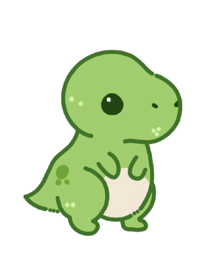
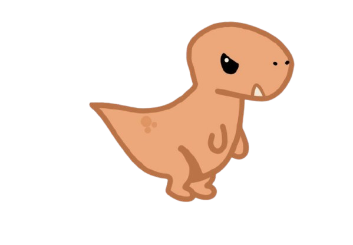
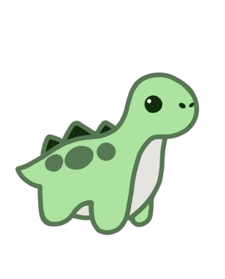
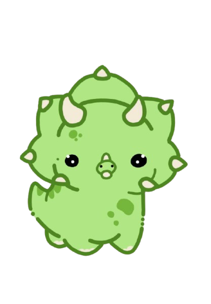
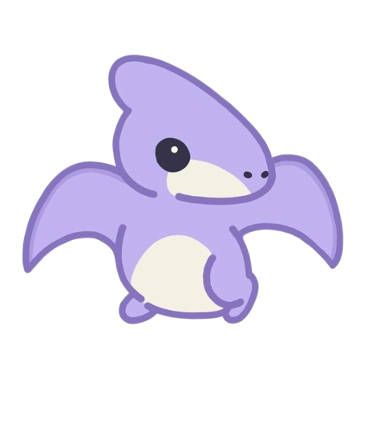
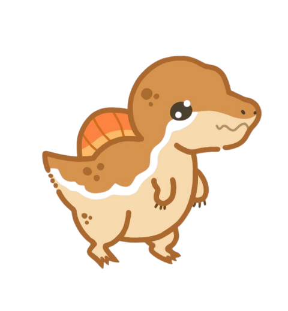

T-Rex
Tyrannosaurus Rex:
Familia:
-Ornistiquios
Era:
-Cretácico tardío, hace 65 millones de años
Dónde vivió?
-Colorado, Montana, Nuevo México, Wyoming, Alberta
Peso:
-9.000Kg
Altura:
-5,2m
Longitud:
-12m
Su nombre significa rey de los lagartos tiranos.
Era conocido por su tamaño colosal, fuerza descomunal y habilidades depredadoras incomparables.

Velociraptor
Velociraptor:
Familia:
-Terópodos
Era:
-Cretácico superior, hace 75 millones de años
Dónde vivió?
-Mongolia
Peso:
-45Kg
Altura:
-0,5m
Longitud:
-2m
Su nombre significa ladrón veloz.
Era más pequeño que su representación en la cultura popular, pero aú así era un cazador temible y veloz, las protuberancias típicas de la inserción de plumas presentes en huesos del brazo confirman que las tenía.
Tenía un pelaje suave para retener el calor y proporcionar energía para cazar.

Stegosaurus
Stegosaurus:
Familia:
-Ornistiquios
Era:
-Jurásico tardío, hace 150 millones de años
Dónde vivió?
-Oeste de América del Norte y Europa (Portugal)
Peso:
-3.100Kg
Altura:
-4m
Longitud:
-9m
Este herbívoro gigante es famoso por sus distintivas placas romboidales y las largas púas en su cola.

Triceratops
Triceratops
* Era herbívoro (comía plantas, hojas y arbustos).
* Tenía 3 cuernos: dos largos sobre los ojos y uno más pequeño en la nariz.
* Poseía un gran volante óseo en la cabeza que lo protegía y podía servir para impresionar o defenderse.
* Era muy grande, pesado y robusto.
* Caminaba en 4 patas.
* Vivió al final del período Cretácico junto a depredadores como el T-rex.
* Tenía cerebro pequeño pero con buen sentido de defensa.
* Podía medir hasta 9 metros de largo.

Pteranodon
Pteranodon
* Era carnívoro (comía peces).
* Podía volar largas distancias aprovechando corrientes de aire.
* No tenía plumas, sus alas eran de piel estirada.
* Tenía excelente vista para localizar presas desde el aire.
* Podía tener una envergadura de hasta 7 metros.
* Vivía cerca de mares y acantilados donde anidaba.

Spinosaurus
Spinosaurus
* Era carnívoro (comía peces y otros animales).
* Tenía una gran vela en la espalda, que pudo servir para regular su temperatura o atraer pareja.
* Pasaba mucho tiempo en el agua, se cree que era semiacuático.
* Tenía dientes largos y delgados ideales para atrapar peces resbalosos.
* Medía hasta 15 metros siendo uno de los carnívoros más grandes.
* Podía caminar en 2 y 4 patas.